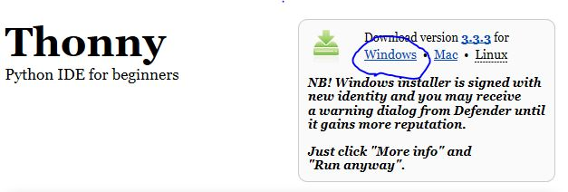
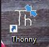
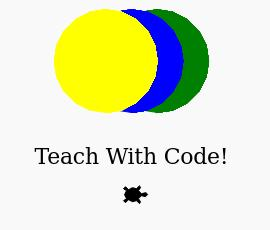

卓远和雅瑜小朋友，你们的寒假编程兴趣班开课啦！这本书是专门为你们编写的，希望你们能够学得开心!
第一步要先在你们的电脑上安装能够创作游戏和动画的武器-->编程环境, 在上面你们可以编写电脑看得懂的语言，这样就可以指挥电脑干活啦！
1. 安装编程环境IDE
-
访问网站: https://thonny.org/
- 点击 "Windows", 保存下载软件并运行
-
安装程序
软件运行后, 依次点击 "Next"(下一步)，注意选择"Create desktop icon"(创建桌面图标)：
-
双击桌面新安装的Thonny IDE程序

-
安装pygame
点击菜单"工具", 选择第一个子菜单"管理器"。出现包管理器界面，搜索"pygame":
从国内访问可能比较慢，等待"Search results"(搜索结果)出现后，点击"pygame"， 安装可能需要一段时间完成, 最后点击"关闭"即可。
2. 体验python语言的魔法
- 第一个游戏程序: 碰撞气球
-
点击下载气球图标到桌面，注意保存文件名必须为intro_ball

-
点击下面代码右上角图标进行拷贝，到Thonny IDE文本区按CTRL+V粘贴
import sys, pygame, time pygame.init() size = width, height = 320, 240 speed = [2, 2] black = 0, 0, 0 screen = pygame.display.set_mode(size) ball = pygame.image.load("intro_ball.gif") ballrect = ball.get_rect() while 1: for event in pygame.event.get(): if event.type == pygame.QUIT: sys.exit() ballrect = ballrect.move(speed) if ballrect.left < 0 or ballrect.right > width: speed[0] = -speed[0] if ballrect.top < 0 or ballrect.bottom > height: speed[1] = -speed[1] screen.fill(black) screen.blit(ball, ballrect) pygame.display.flip() time.sleep(0.01)保存文件到桌面，可以取文件名为ball.py
-
点击运行，就可以看到碰撞的气球啦
- 如果之前没有保存文件，这里也可以保存文件名为ball.py到桌面再运行
- 对于保存好的文件，下次可以直接双击打开文件运行
-
感兴趣的话，可以改动上面的代码，比如size后面的数字表示窗口的大小， speed后面的数字表示两个方向分别的速度， black后面数字表示红黄蓝颜色的成分(255以内)
-
- 试试电脑里面自带的游戏
- 认识Turtle(小乌龟)画图
-
让电脑来画画
-
在Thonny IDE上新建一个新的文件：选菜单"File(文件)" --> "New(新文件)"
-
同样点击下面代码右上角图标进行拷贝，按CTRL+V粘贴到Thonny文本区
from turtle import * speed('fastest') # turning the turtle to face upwards rt(-90) # the acute angle between # the base and branch of the Y angle = 30 # function to plot a Y def y(sz, level): if level > 0: colormode(255) # splitting the rgb range for green # into equal intervals for each level # setting the colour according # to the current level pencolor(0, 255//level, 0) # drawing the base fd(sz) rt(angle) # recursive call for # the right subtree y(0.8 * sz, level-1) pencolor(0, 255//level, 0) lt( 2 * angle ) # recursive call for # the left subtree y(0.8 * sz, level-1) pencolor(0, 255//level, 0) rt(angle) fd(-sz) # tree of size 80 and level 7 y(80, 7)-
按菜单上的绿色运行图标，就可以出现类似下面的图案啦
如果需要保存文件，可以先保存，下次可以直接双击打开保存的文件运行
同样，你也可以修改上面代码，比如最后一行代码7层变为10层，图画就会有更多细节出现

-
-
-
画圈的小乌龟, 参考https://trinket.io/
import turtle def draw_circle(turtle, color, size, x, y): turtle.penup() turtle.color(color) turtle.fillcolor(color) turtle.goto(x,y) turtle.begin_fill() turtle.pendown() turtle.circle(size) turtle.penup() turtle.end_fill() turtle.pendown() tommy = turtle.Turtle() tommy.shape("turtle") tommy.speed(500) draw_circle(tommy, "green", 50, 25, 0) draw_circle(tommy, "blue", 50, 0, 0) draw_circle(tommy, "yellow", 50, -25, 0) tommy.penup() tommy.goto(0,-50) tommy.color('black') tommy.write("Let's Learn Python!", align="center", font=(None, 16, "bold")) tommy.goto(0,-80)